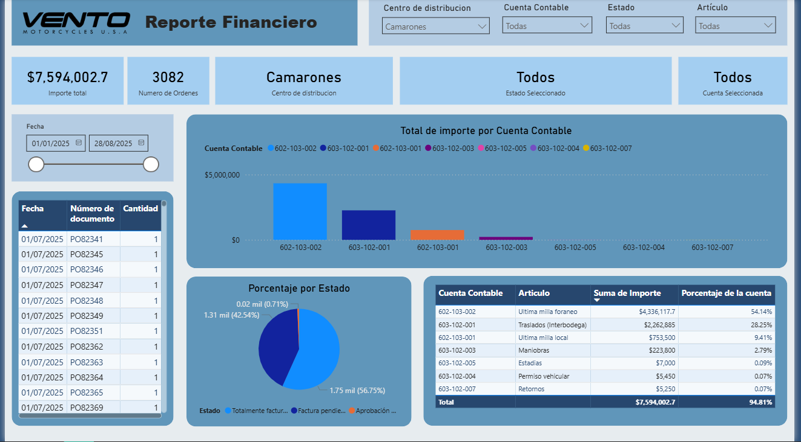

Reporte de estatus de órdenes de venta
Reporte que permite revisar la cantidad de ordenes de venta (SO) y su estatus, con la finalidad de darle seguimiento a los días de atraso de las unidades.
Visualizar reporteReporte de estatus de órdenes de traslado
Reporte que permite revisar la cantidad de ordenes de traslado (TO) y su estatus por cada CEDI (centro de distribución).
Visualizar reporte

Análisis financiero
Reporte que permite conocer el gasto mensual de las órdenes de compra (PO), y su estatus por CEDI (centro de distribución).
Visualizar reporteReporte de estatus de órdenes de compra por CEDI
Reporte que permite revisar la cantidad de ordenes de compra (PO) y el estatus en el que se encuentra, esto por cada CEDI (centro de distribución)
Visualizar reporte